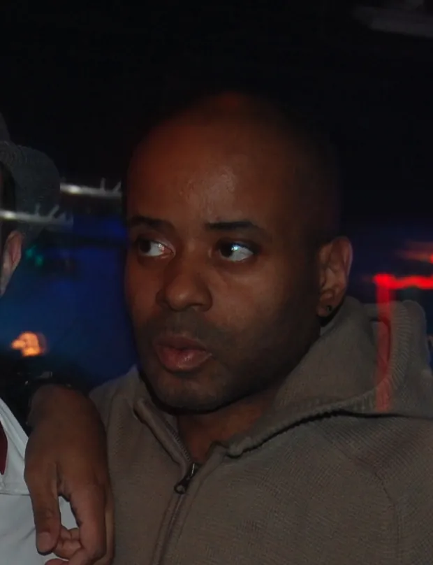
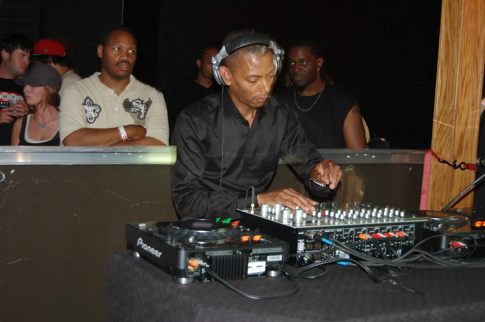

Techno guide
Techno: from Detroit to Berlin and back
Three friends from a small town outside Detroit, a radio DJ who played Kraftwerk next to Funkadelic, and the machine music that found its biggest audience in Europe.
Music that sounds like technology.
Techno started in a city that was losing its factories. Detroit in the early 1980s was the home of Motown and the car industry and was emptying out, and three young Black men from its suburbs took the European synthesiser records they heard on late-night radio and made something that sounded, in Juan Atkins's own phrase, like technology rather than technology pretending to be music.
They named it after a book about the future, sold the first records mainly in Chicago, and found their biggest audience in Britain and Germany. By the early 1990s the most important techno club in the world was in the vaults of a department store in East Berlin, and many of its DJs were from Detroit.
This guide covers what techno is and what it sounds like, the Detroit records that started it, where the name comes from, Underground Resistance and the second wave, the Berlin alliance, and the styles that fill the word now, from minimal to hard techno.
What is techno?
Techno is dance music made almost entirely by machines, for a DJ to play in a continuous set. The kick drum lands on every beat, as in house, but techno usually runs faster, somewhere between 120 and 150 beats per minute, and it leaves out most of what house keeps: the soul vocal, the gospel piano, the disco sample.
What it puts in their place is rhythm and sound. A techno track is often a few repeating patterns, sequenced notes rather than a melody, with the interest in how the sounds themselves change: a filter opening, a synthesiser line slowly turning metallic, percussion added and taken away. Harmony in the usual sense matters less than timbre.
That makes techno music easier to recognise than to describe. It is the dance music that sounds most like a machine running, and the people who invented it meant it to.
What techno sounds like.
The core of techno's sound is a small group of Roland machines from the early 1980s. The TR-808 and TR-909 drum machines supply the kick drums, claps and hi-hats of most classic techno, and they are still prized, as are software copies of them. Sequencers repeat short patterns exactly, bar after bar, which is where techno's hypnotic quality comes from.
Derrick May once described techno as George Clinton and Kraftwerk stuck in a lift together with only a sequencer for company. Funk rhythm and European electronic coldness, held together by a machine, is still a fair summary. Kevin Saunderson put his own attraction more simply. He liked the idea that one person could make all of it alone.
A techno set is built differently from a house set too. Tracks are long, often with no vocal at all, and a DJ layers them for minutes at a time, so that the set is heard as one piece rather than a run of songs. That is why techno is so strongly tied to long nights in large, dark rooms.
Detroit and the Belleville Three.
Juan Atkins, Derrick May and Kevin Saunderson met as teenagers in Belleville, a small town outside Detroit where Atkins's family had moved. They traded mixtapes, learned to DJ, and listened to the Electrifying Mojo, Charles Johnson, whose late-night show on Detroit radio from 1977 into the mid 1980s played Kraftwerk, Giorgio Moroder, Yellow Magic Orchestra and Tangerine Dream next to Parliament and Funkadelic.
Atkins taught May to mix, and in 1981 they and friends including Eddie Fowlkes launched a party crew, Deep Space Soundworks, playing high-school clubs, church halls and empty offices. Detroit had its own small party circuit then, run by young promoters through high-school social clubs, and it is where the first audience for this music came from.

Atkins made the first records. With Richard Davis he formed Cybotron, and in 1983 they released "Clear", an electro record with a synthesiser line that has been sampled ever since. Missy Elliott built her 2006 single "Lose Control" on it, which earned Atkins a Grammy nomination as a writer more than twenty years later.
In 1985 Atkins started his own label, Metroplex, and released "No UFO's" under the name Model 500. It sold between 10,000 and 15,000 copies, most of them in Chicago, where May carried copies on his regular trips and gave them to DJs. It is generally called the first techno record: less of a song than anything Cybotron made, with the machine rhythm itself at the front.
Detroit and Chicago were close from the start. May drove to Chicago to hear Frankie Knuckles and Ron Hardy, and sold Knuckles the drum machine he used at the Power Plant. Atkins has said that "No UFO's" was the only American independent record the Chicago DJs played at the time. House and techno grew up in the same few years, a few hours' drive apart, on the same equipment. The house music guide tells the Chicago side.
Why is it called techno?
Atkins took the word from the futurist writer Alvin Toffler, whose book The Third Wave was also the source of the names Cybotron and Metroplex. He was calling Cybotron's music techno in the early 1980s, and Cybotron released a single called "Techno City" in 1984.
The word became the name of a genre in Britain in 1988. Neil Rushton, a former northern soul DJ working for Virgin's 10 Records, compiled an album of Detroit tracks with Derrick May. Its working title was The House Sound of Detroit. Atkins contributed a track called "Techno Music", and the Belleville Three voted against being filed as a regional brand of house. The compilation came out as Techno! The New Dance Sound of Detroit.
It did not sell well, but it gave British journalists a name for the music and separated Detroit from Chicago in their writing. Earlier in the 1980s "techno" had been used loosely in Germany and Japan for electronic pop; after 1988 it meant this.
Strings of Life and the Music Institute.
Derrick May's first record was "Nude Photo" in 1987. His second, "Strings of Life", released that year as Rhythim Is Rhythim, is the one that crossed over. It was built from a piano piece by his friend Michael James, which May took from his sequencer, sped up from 80 beats per minute, cut into loops and laid over drums and string samples. Frankie Knuckles gave it its name after May passed him a tape. May also ran his own label, Transmat.
"Strings of Life" has no real bassline, and it arrived in Britain during the 1987 and 1988 house boom as if it belonged there. It is claimed by house and by techno, and it shows better than any other record how thin the line between them was at the start. DJ Mark Moore said it was the record that eased London club-goers into house.
Kevin Saunderson took the other route. His group Inner City made "Big Fun", a vocal house record that almost did not make the Techno! compilation and became a hit in the autumn of 1988, reaching number eight in Britain. It put Detroit in the charts and brought the three of them to the attention of major labels.
Detroit had its own club for a short time. The Music Institute opened in mid-1988 at 1315 Broadway downtown, with May among the Friday night DJs and Chez Damier playing to a mostly gay crowd on Saturdays. It served no alcohol, only juice and "smart drinks", ran all night in plain white rooms, and closed on 24 November 1989. May played "Strings of Life" at the end, over a recording of clock bells.
Underground Resistance and the second wave.
Underground Resistance started in 1989, formed by "Mad" Mike Banks, a former Parliament bassist, and Jeff Mills, then a well-known Detroit radio DJ called the Wizard. Robert Hood joined them. UR took the Detroit sound and made it political: militant, anti-corporate, aimed at young Black men in a city in recession. They appeared in public only in ski masks and black combat clothes, scratched messages into their vinyl and refused the major labels.

Mills left to work on his own in the early 1990s and founded Axis Records in 1992. He has since scored films, played with orchestras and been made a knight of France's Ordre des Arts et des Lettres, but his 1996 record "The Bells" is still the one that turns up on every list of techno classics.
Robert Hood went the other way. He thought techno had become too fast and too "ravey" by the early 1990s and set out to strip it back to drums, bassline and groove. His 1994 EP Minimal Nation, on Axis, is where minimal techno begins, and in the same year he founded his own label, M-Plant. Boiler Room filmed him playing in 2013.
Around them came a second Detroit wave: Carl Craig, Octave One, Kenny Larkin, Stacey Pullen and the UR members themselves. Just across the river in Windsor, Ontario, Richie Hawtin and John Acquaviva launched Plus 8 Records. With little work at home, many of them found their audience in Europe.
Berlin and the techno alliance.
The European scene that took them in was already busy. In Belgium, the Ghent label R&S Records put out hard, metallic records by New York's Joey Beltram and by CJ Bolland; Beltram's "Energy Flash", from 1990, is another record that every list of techno classics carries. Glasgow's Sub Club and London's Trade kept techno going in Britain.
Berlin became the second centre. Tresor opened in March 1991 in the vaults of a former department store in Mitte, and its label's first releases came from Detroit. Blake Baxter, Eddie Fowlkes and Jeff Mills played there, and Mills and Baxter lived in Berlin for a time. In 1993 Tresor Records released Tresor II: Berlin & Detroit, A Techno Alliance, a compilation that named the arrangement.
Kraftwerk, the Düsseldorf group the Belleville Three had heard on the Electrifying Mojo, was German, and the Munich disco of Giorgio Moroder was another of their influences. The history of German electronic music and the guide to Berlin clubs tell the German side in full, from Kraftwerk to Berghain, which was being called the world capital of techno by 2007.
Types of techno.
Techno now covers a lot of ground. These are the names a listener will meet most often, from the oldest to the newest.
| Style | Where and when | What it sounds like | Where to start |
|---|---|---|---|
| Detroit techno | Detroit, mid 1980s | Machine funk, strings and synthesiser lines | Model 500, "No UFO's" |
| Minimal techno | Detroit, early 1990s | Drums, bassline and groove, nothing else | Robert Hood, Minimal Nation |
| Dub techno | Early 1990s | Techno crossed with Jamaican dub: deep bass, slow chords, heavy delay | No single founding record |
| Acid techno | 1990s | A TB-303 line over harder techno drums | Hardfloor, "Acperience 1" |
| Melodic techno | Europe, late 2000s to 2010s | Techno rhythm with long melodic progressions, 120 to 128 BPM | Tale of Us, ARTBAT, Stephan Bodzin |
| Hard techno | Europe, 2010s to 2020s | Fast and distorted, the kick in front | Sara Landry |
Minimal techno came from Robert Hood and Daniel Bell in Detroit in the early 1990s. Dub techno, from the same years, crosses techno's repetition with Jamaican dub: deep bass, slow-moving chords and heavy delay and reverb. Acid techno puts the TB-303 of acid house over harder techno drums, and the acid house guide covers where that sound came from.
Melodic techno is the newest large style. It grew in Europe from the late 2000s, combining techno's rhythm with long melodic progressions and influences from trance and progressive house, and became one of the most popular sounds at festivals in the late 2010s through Tale of Us, ARTBAT, Stephan Bodzin and the labels Afterlife and Innervisions. It usually runs slower, between 120 and 128 beats per minute.
Hard techno is its opposite: fast, distorted and physical, with the kick drum pushed until it is the whole track. In this site's catalogue the most-watched set tagged hard techno is Sara Landry's for Boiler Room, ahead of Len Faki and Brutalismus.
In the catalogue of recorded DJ sets behind this site's Selector, 8,547 sets carry a techno tag as of September 2026, second only to house among named genres, with 911 tagged minimal and 788 hard techno.
Techno today and Detroit now.
Techno has never been a chart music, apart from a few acts such as Underworld and Orbital, but it has spread into almost everything else. Ford used "No UFO's" in a 2000 television advertisement for the Focus, with "Detroit Techno" as a print slogan. The city that ignored its own music for years now holds a festival for it: Movement, on Memorial Day weekend at Hart Plaza, which began in 2000 as the Detroit Electronic Music Festival.
Europe has kept the club side alive. Berlin, Amsterdam, Tbilisi's Bassiani, Glasgow's Sub Club and dozens of smaller rooms play techno every weekend, and the Detroit originals still tour. Kevin Saunderson played for Boiler Room in Chicago, the other city in the story.
Techno vs house.
The two genres share a birth year, a drum machine and a four-on-the-floor kick, and they are still often played in the same set. The differences are of emphasis, and they are clearer side by side.
| Techno | House | |
|---|---|---|
| Where | Detroit, mid 1980s | Chicago, early 1980s |
| Tempo | About 120 to 150 BPM | About 118 to 128 BPM |
| What leads | Machine rhythm and texture | Groove, bassline, often a vocal |
| Roots | Kraftwerk, electro, funk, Chicago house | Disco, soul, Philadelphia and Salsoul records |
| A record to start with | Model 500, "No UFO's" | Marshall Jefferson, "Move Your Body" |
The simplest way to hear the difference is to put "Strings of Life" next to "Move Your Body". Both are from 1986 and 1987, both have piano, and one is a song while the other is a machine pattern that happens to have a piano in it. Most records since sit somewhere between the two.
Techno FAQ.
What defines techno music?
A four-on-the-floor kick drum at roughly 120 to 150 beats per minute, sounds made almost entirely by drum machines, sequencers and synthesisers, and rhythm and texture placed ahead of melody and vocals. Techno tracks are built to be mixed into a continuous DJ set rather than heard as songs.
Who are the fathers of techno?
Juan Atkins, Derrick May and Kevin Saunderson, three friends from Belleville near Detroit known as the Belleville Three. Atkins is usually called the originator: his Model 500 record "No UFO's" from 1985 is generally named as the first techno record. Eddie Fowlkes was part of the same early circle.
Who is considered the first techno band?
Cybotron, the Detroit duo of Juan Atkins and Richard Davis, whose "Clear" (1983) and "Techno City" (1984) came before techno was a genre name. Kraftwerk from Düsseldorf are often mentioned as well, but as the influence the Detroit producers drew on rather than as a techno act.
Where did techno originally come from?
Detroit, in the mid 1980s. The word was used loosely for electronic pop in Germany and Japan earlier in the decade, but techno as a genre dates from the Detroit records of Atkins, May and Saunderson and the 1988 British compilation Techno! The New Dance Sound of Detroit, which gave it its name.
Is techno still a thing?
Yes. It is the main music of clubs such as Berghain in Berlin and Bassiani in Tbilisi and of festivals such as Movement in Detroit and Awakenings in Amsterdam, and its newer styles, melodic techno and hard techno, draw some of the biggest crowds in dance music.
What is the difference between techno and house?
House came from Chicago and keeps disco's soul: vocals, piano, warmth, usually 118 to 128 beats per minute. Techno came from Detroit at the same time and strips those away for machine rhythm and texture, usually faster. They share the four-on-the-floor kick, and records such as "Strings of Life" belong to both.
Sources.
- Wikipedia: Techno
- Wikipedia: Detroit techno
- Wikipedia: The Belleville Three
- Wikipedia: No UFO's
- Wikipedia: Strings of Life
- Wikipedia: Underground Resistance
- Wikipedia: Robert Hood
- Wikipedia: Movement Electronic Music Festival
- MusicBrainz: Robert Hood, Minimal Nation (Axis, 1994)
- Set counts are measured from this site's own catalogue of recorded DJ sets, as of September 2026.
Continue reading
Read next.
 Music history~11 min read
Music history~11 min readGerman Electronic Music History: From Kraftwerk to Techno
Cologne studios, Düsseldorf electronic pop, Frankfurt trance and the Detroit-Berlin alliance.
Read article → Music history~27 min read
Music history~27 min readThe Evolution of UK Electronic Music
Ten sounds that travelled from regional underground scenes into global culture.
Read article → Rave spots~10 min read
Rave spots~10 min readBest Clubs in Berlin: The Legends and the Ones Still Open
The rooms that made Berlin a techno city, the famous clubs that closed, and the best clubs in Berlin that are still open.
Read article → Rave spots~6 min read
Rave spots~6 min readBest Clubs in Paris: From Le Palace to Rex Club
Le Palace, Les Bains Douches and Rex Club: the clubs that made Paris nightlife, how each became famous, and the best clubs in Paris open now.
Read article →